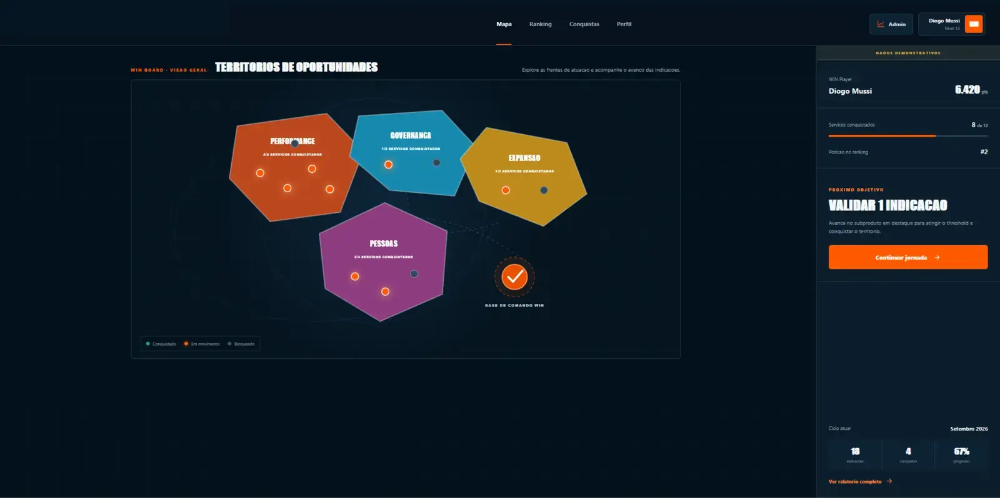
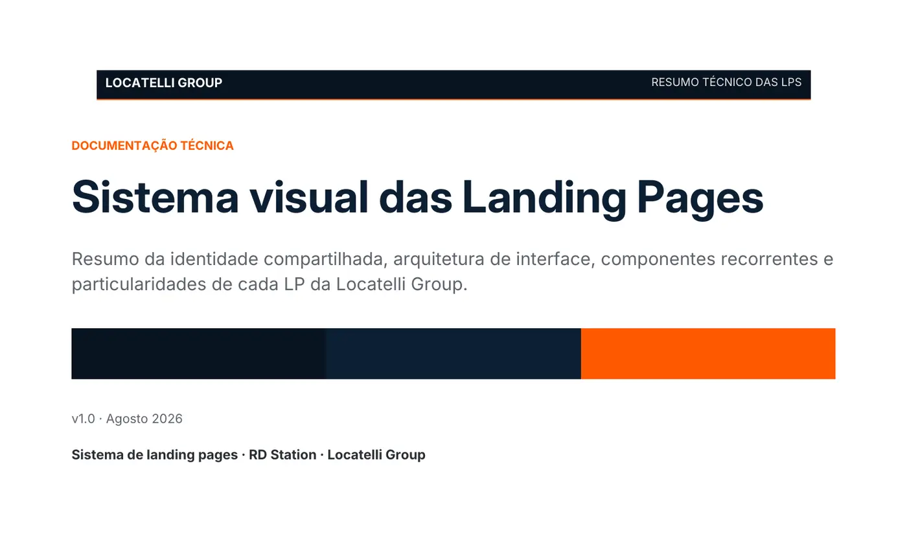

01 / Produto interno
Programa WIN
Uma experiência gamificada para transformar indicações entre áreas em uma jornada visível, mensurável e administrável.
Explorar o casePortfólio digital
Growth, UX e engenharia de produto.
Estratégia, experiência e tecnologia organizadas em produtos que podem ser compreendidos, usados e evoluídos.
Ver projetosPrograma WIN: experiência interna e arquitetura de dados
Trabalhos selecionados
Cases que conectam objetivo de negócio, interface, conteúdo e implementação.

01 / Produto interno
Uma experiência gamificada para transformar indicações entre áreas em uma jornada visível, mensurável e administrável.
Explorar o case
02 / Aquisição digital
Nove páginas organizadas como um sistema coerente entre busca, anúncio, copy, interface, RD Station e conversão.
Explorar o caseForma de atuação
Objetivo, público, restrições e critérios de sucesso antes de escolher a solução.
Jornada, conteúdo e interface construídos para reduzir dúvida e orientar ação.
Código, integrações e dados tratados como parte do mesmo produto.
Testes e evidências proporcionais ao risco, com limites explicitados.